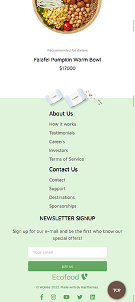

WEB
DEVELOPER
OPEN API / JAVASCRIPT / REACT / JQUERY / JSON / AJAX / RESPONSIVE DESIGN
PROJECT 01
Interpark 인터파크
Open API , Json
Point Color
국내 웹 도서 사이트 인터파크의 클론 사이트입니다.
페이지 내의 도서들은 Kakao open Api를 사용하여 구현하였습니다.
도서사이트의 특징인 많은 정보로 인하여 복잡한 레이아웃을
좀 더 간결하며 모던하게 재해석했습니다.
정적인 느낌을 탈피하고, 더 많은 정보를 제공하고자
jQuery를 활용하여 네비게이션과 슬라이드를 접목시킨 상품 리스트, 게시판 등의
다양한 인터렉션 요소를 배치하였습니다.
도서를 구매할 수 있는 Sub Page도 함께 제작하였습니다.
PROJECT 02
Ecofood
Responsive Website
Point Color
레스토랑 Ecofood의 홍보 웹사이트입니다.
다양한 사용자에 맞게 반응하도록 미디어쿼리를 사용한 반응형
웹페이지입니다.
그린을 포인트 컬러로 사용하여 이미지에
유기농 레스토랑을 연상시켰습니다.
레스토랑 예약, 메뉴 가격 ,오픈시간 ,위치 등 다양한 정보를 제공합니다.
서브 페이지는 레스토랑 소식을 블로그 형식으로 제작하여 더욱 상세하게
정보를 제공하고 있습니다.

- 

PROJECT 03
BEWINE
Responsive Website
Point Color
해외 스피치 콘테스트 CONFER의 홍보 웹사이트입니다.
다양한 사용자에 맞게 반응하도록 미디어쿼리를 사용한 반응형
웹페이지입니다.
어두운 배경에 그라데이션 컬러를 사용하여 주목성을 이끌었습니다. 웹페이지는 연설자, 기간, 가격등 다양한 정보를 제공하고 있습니다.
더 많은 정보를 제공하고자 jQuery를 활용한 네비게이션을 넣는 등 인터렉션 요소를 배치하였습니다.
서브 페이지는 블로그 형식으로 제작하여 더욱 상세하게 정보를 제공하고 있습니다.
PROJECT 04
진맛과
Shopping Mall
Point Color
과일쇼핑몰 진맛과의 클론 사이트입니다.
메인 페이지는 Json을 사용하여 데이터 값을 받아와 구현했습니다.
간결하고 단순한 레이아웃으로 상품에 집중된 웹페이지입니다.
Javascript를 활용하여 슬라이더 및 상품 이미지에 마우스가 올라갈시 상품의 설명이 보이는 인터렉션 요소를 배치하였습니다.
상품 구매페이지인 Sub Page도 함께 제작하였습니다.

About Me

김은선 Kim eun seon
| Birth | 1996.12.19 |
|---|---|
| Address | Suwon-si |
| Phone | 010 4563 2855 |
| dmstjs7000@naver.com |
성장하는 개발자

EDUCATION
- 2015화홍고등학교 졸업
- 2020경기대학교 조형학과 졸업
LICENCE
- 2019GTQ 포토샵 1급
- 2021컴퓨터 그래픽스 운용기능사
- 2021웹디자인 기능사(필기 합격)
TRAINING
- 이젠컴퓨터아트학원
UI/UX
웹퍼블리셔 전문가 양성과정 수료(2021년 9월)
SKILL
- HTML / CSS
- Responsible web / Media query
- Javascript
- React
- Json / Ajax
- Jquery
- Open Api